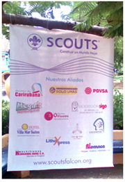

San Jorge, Patrono de los Scouts,
representa el triunfo del bien sobre el mal, la fortaleza y el amor que
anida en cada ser humano y que es capaz de vencer hasta los obstaculos
más gradez.
Para algunos de nuestros muchachos y muchachas, el obstaculo a vencer
es la falta de recursos materiales que entorpece gravemente su
participación plena en el Programa Scout; y es allí donde, con su ayuda
generosa podremos extender una mano amiga a esos entusiastas jovencitos.
Siendo así esta propuesta contempla en Padrinazgo de su parte de 3 de nuestros miembros durante un año, y contempla:
Otorgamiento de “Carta Testimonial”(Tipo
certificado) por el apoyo directo a los muchachos scouts durante el año 2013, junto
con una calcomanía alusiva para colocar en un lugar visible
Disponibilidad para incluir material POPde
su empresa en los Kits de los participantes de nuestros eventos, así
como en las valijas de material informativo enviado a los grupos
Scouts. Encargándonos nosotros de su empaque y distribución.
Adicionalmente su marca o nombre aparecerá debidamente ubicado en:
Página Web de los Scouts de Falcón (durante por lo menos un año). Pendón Oficial “Construyendo un Mundo Mejor”,
que será de uso permanente en todas las actividades de acción
comunitaria o conservacionista que organice la Región Scout Falcón. Boletín Guairan, órgano informativo de la Región Falcón de aparición trimestral.
Favor emitir cheque a nombre de la Asociación de Scouts de Venezuela. Las Contribuciones a nuestra organización son deducibles del Impuesto Sobre la Renta. Ley del ISLR.